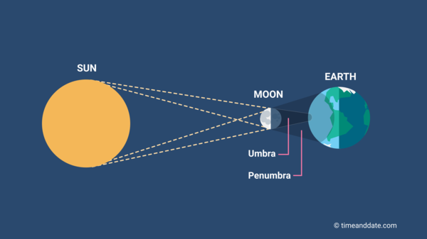
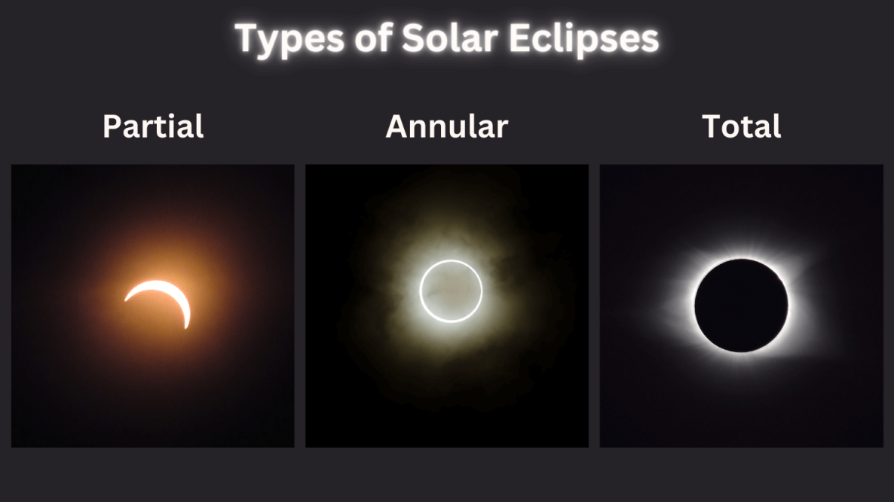

| Eclipses happen when the Earth lines up with both the Sun and the Moon. There are different types of eclipses, based on how the 3 objects line up. A solar eclipse occurs when the Moon moves between the Sun and Earth, blocking part of the Sun and casting a shadow. These only happen during new moons which means the Sun and Moon are on the same side of Earth. A solar eclipse doesn't happen with every new moon though, the Moon usually misses the Sun except for 2 times each year. |  |
|  | A total solar eclipse happens when the Moon fully covers the Sun. The ablitity for this to happen is total coincidence, the Sun is 400x larger than the Moon but also 400x farther away which can make them appear the same size to us. During the total solar eclipse, the Moon completely covers the Sun and allows observers to see the Sun's outer atmosphere, called the corona, which is otherwise invisible due to the brightness of the Sun. There are 2 parts to the shadow cast on Earth, the darker inner shadow (the umbra) and a lighter outer shadow (the penumbra). To see the total solar eclipse, you have to be within the umbra. If you are outside the penumbra, you won't see any eclipse at all.The umbra will move with time as the Earth spins and creates a path of totality, the place an observer can see the total solar eclipse. |
| There are other types of eclipses, one is called the annual solar eclipse. An annual solar eclipse happens when the Moon is at its farthest point from Earth and therefore looks smaller. This means the Moon doesnt cover the Sun fully and leaves a ring of sunlight. Another type is the hybrid solar eclipse where, due to the shape of the Earth's curve, a total eclipse will look total in some places and annular in other places. There is a third type called a partial solar eclipse where the Moon and Sun are not perfectly aligned and the Moon only covers part of the Sun. This results in only the penumbra hitting the Earth while the umbra misses us (From NASA.gov). |  |